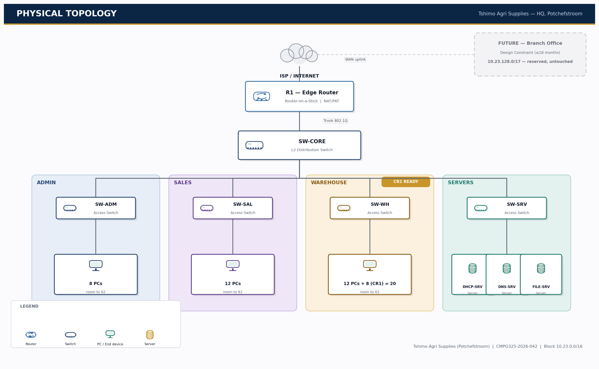
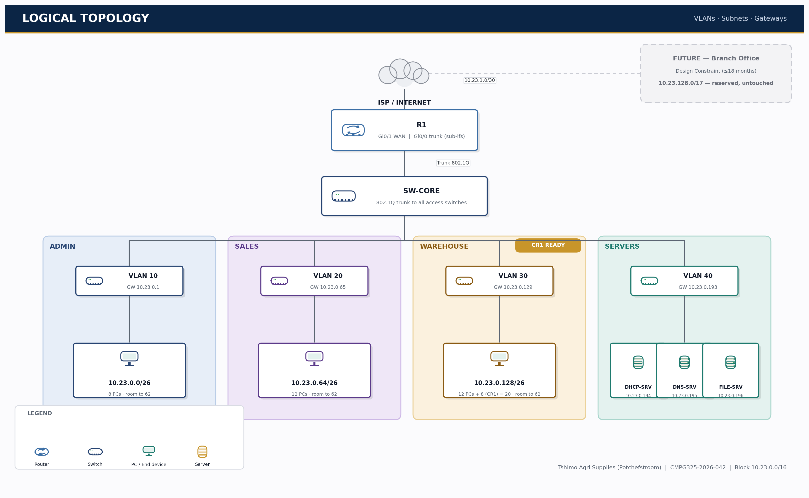
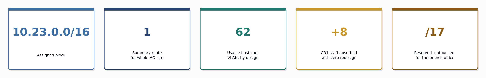

Every decision in this plan follows one rule: solve the requirement by allocation, not by re-architecture. Uniform subnet sizes, a single summarisable HQ route, and untouched reserved space mean the branch-office constraint and Change Request 1 are both already solved before they happen.
The following requirements are given directly by the assignment brief and are not open to interpretation.
The brief does not specify Tshimo Agri Supplies' internal department structure. The breakdown below was adopted for a small-to-medium agricultural supply business and drives the topology and addressing plan in Sections 2–4. This is a working assumption, flagged for client confirmation.
| Department | Function | Current Staff |
|---|---|---|
| VLAN 10 Administration / Management | HR, finance, general management | 8 |
| VLAN 20 Sales | Customer-facing sales & orders | 12 |
| VLAN 30 Warehouse / Logistics | Stock, dispatch, delivery — CR1 department | 12 (+8 via CR1 = 20) |
| VLAN 40 IT / Server Room | DHCP, DNS and File/ERP services | 3 servers |
A single edge router provides the WAN connection; a core switch distributes 802.1Q trunks down to one access switch per department, keeping every department electrically and logically separate while sharing a single router for inter-department routing.

| Device | Role | Suggested PT Model | Key Interfaces |
|---|---|---|---|
| R1 | Edge router — WAN uplink, inter-VLAN routing (router-on-a-stick), NAT/PAT | Cisco 4321 / 2911 | Gi0/0 (trunk to SW-CORE), Gi0/1 (WAN to ISP) |
| SW-CORE | Distribution switch — trunks VLANs between R1 and access layer | Cisco 2960 | Trunk ports to R1 and each access switch |
| SW-ADM / SW-SAL / SW-WH | Access switches — one per department | Cisco 2960 (24-port) | Access ports to PCs, uplink trunk to core |
| SW-SRV | Access switch — server segment | Cisco 2960 | Access ports to DHCP/DNS/File servers |
| End devices | Department PCs + 3 servers | PC-PT / Server-PT | FastEthernet to access switch |
Each department is a separate VLAN. R1 performs inter-VLAN routing using a router-on-a-stick design (one sub-interface per VLAN on Gi0/0), and provides the default route out to the ISP on Gi0/1 with NAT/PAT for internet-bound traffic. DHCP is served from a dedicated DHCP server in the Server VLAN rather than the router, reflecting realistic enterprise practice.

| VLAN | Name | Purpose | Subnet |
|---|---|---|---|
| 10 | ADMIN | Administration / Management | 10.23.0.0/26 |
| 20 | SALES | Sales | 10.23.0.64/26 |
| 30 | WAREHOUSE | Warehouse / Logistics (CR1 department) | 10.23.0.128/26 |
| 40 | SERVERS | DHCP, DNS, File/ERP servers | 10.23.0.192/26 |
| 99 | MGMT-NATIVE | Switch management / native VLAN (no user traffic) | 10.23.1.16/28 |
The assigned block 10.23.0.0/16 is split first at the /17 level: the lower half is allocated to the Potchefstroom HQ site now, and the upper half is reserved, untouched, for the branch-office constraint. Inside HQ, the plan uses exactly two /24 networks today — one for business VLANs, one for infrastructure — chosen so the whole HQ site collapses into a single summary route upstream.
| Allocation | Block | Status |
|---|---|---|
| HQ — Potchefstroom | 10.23.0.0/17 | In use — 2 of 128 possible /24s (see 4.2 / 4.3) |
| Reserved — future Branch Office | 10.23.128.0/17 | Untouched — available on demand |

| Subnet (VLAN) | Network / CIDR | Usable Range | Broadcast | Gateway | Usable Hosts |
|---|---|---|---|---|---|
| VLAN 10 Admin | 10.23.0.0/26 | .1 – .62 | .63 | .1 | 62 (8 used) |
| VLAN 20 Sales | 10.23.0.64/26 | .65 – .126 | .127 | .65 | 62 (12 used) |
| VLAN 30 Warehouse | 10.23.0.128/26 | .129 – .190 | .191 | .129 | 62 (20 used) |
| VLAN 40 Servers | 10.23.0.192/26 | .193 – .254 | .255 | .193 | 62 (3 used) |
| Purpose | Network / CIDR | Usable Range | Broadcast | Gateway | Usable Hosts |
|---|---|---|---|---|---|
| R1 – ISP WAN link | 10.23.1.0/30 | .1 – .2 | .3 | n/a | 2 (point-to-point) |
| VLAN 99 Mgmt/Native | 10.23.1.16/28 | .17 – .30 | .31 | .17 | 14 (switches only) |
| Guest Wi-Fi (future) | 10.23.1.32/28 | .33 – .46 | .47 | .33 | 14 (reserved) |
| Free / future infra | 10.23.1.48 – .255 | — | — | — | 208 addresses spare |
The entire 10.23.128.0/17 (32,768 addresses) is reserved and untouched. Opening a branch requires only allocating from this pool — no re-addressing of the HQ site.
Warehouse/Logistics (VLAN 30) is sized at /26 (62 usable) against 12 current staff. Adding 8 brings usage to 20/62 — well inside the existing subnet. No VLSM change, no re-cabling.
General headroom: 126 further /24 networks remain free inside the HQ /17 alone, before any branch-office space is touched — this design will not need revisiting for the foreseeable life of the business.
Repository: tshimo-agri-network-cmpg325 — the individual GitHub portfolio required by the module brief, tracking design documentation, configuration, and evidence through to final submission.
git init in project folder, add README.md and /docs skeletonI declare that this design and its accompanying documentation are my own work, produced for CMPG 325 at North-West University, Mahikeng campus, in accordance with the NWU AI Policy. All design decisions above — department structure assumptions, VLAN/subnet allocation, and topology choices — are ones I understand and can defend.